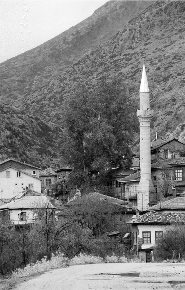
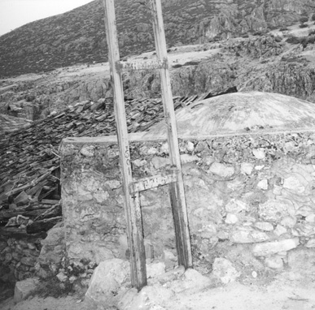

Isparta - Barla
Elimde coşkun gönüllü merhum şâir-edib Arif Nihad Asya’nın Duâlar ve Âminler isminde bir şiir kitabı vardı. Bu eserdeki güzel şiirlerden birisi Eğirdir Gölü ismini taşırken, bir başka şiir ise Isparta ismindedir.
Bu şiiri, otuz senelik İstanbul günlerimde, gönül dostum, irfan sahibi ağabeyim Doktor Cahid Öney Bey’e besteletmiştim. Kendileri eskilerin tâbiriyle “hezârfen” idi. Yani, on parmağında on marifet vardı. Bestekârdı, şâirdi ve santranç şampiyonu idi.
Arif Nihat Asya’nın şiirinin birkaç yerine Barla nur beldesini ilâve ediyorum. Merhumun aziz ruhu bu nur duasından mutlaka sevinecektir!
Koru koru, bahçe bahçe,
Kuşlar ses verir, ses alır.
Parkında çiçek tarhları,
Halılarından ders alır.
Nur Barla’nın erenleri,
Gül suyuyla, abdest alır.
Çiçekten, yemişten, aşktan,
Muradını herkes alır.
Nur Barla’da göğüsler, gül,
Kokusuyla nefes alır.
Nur Barla’nın erenleri,
Gül suyuyla abdest alır.
Isparta Tarihi’nde Barla Bucağı
Eski Isparta Mebusu Böcüzade Süleyman Sâmi Bey’in nefis bir kitabı vardır. Bu kitabı Süleyman Sami Bey’in torunlarından Doktor Suat Seren Böcüzade, 1983’te “Kuruluşundan Bugüne Kadar Isparta Tarihi’ adı altında yeniden yayınlamıştır.
Bahsi geçen kıymetli eserde “Barla Bucağı” başlığı altında mesleğimiz olan Nurlar’ın İlk Dershanesi, güzel ve yeşil belde Barla hakkında şunlar anlatılmaktadır.
Barla’nın Camileri - Mescidleri
Yüzyıllar ötesinden gelen Barla’daki cami ve mescidler:
Göçeri Mehmed Paşa veya Pazar Camii.
Ak Ahmed Ağa veya Ak Mescid, 1850.
Baş Mahalle Camii veya Mescidi, Tamir: 1960
Yokuşbaşı Camii veya Mescidi.
Pazar Camii.
Ahırcı Mescidi.
Musaların (Muş, Muj) Mescidi: Nur Üstad’ın tamir ettirerek imamlık yaptığı mescid. 1935’lerde yüz yirmi Nur talebesini tevkif ederek Eskişehir zindanlarına attıkları günlerde, bu Musaların Mescidi’ni de yıkarak taşlarını yukarıdaki okulun inşaatında kullanıyorlar.
Yeni Cami (2000’li yılların başlarında Barla’nın girişinde yapılan cami).
Çaşnîgîr Camii veya Büyük Cami (Barla’nın en büyük camii).
Midhad Sertoğlu 1986’da yayınlanan Osmanlı Tarih Lügati ismindeki sözlüğünde “çaşnîgîr” kelimesine şu manaları vermektedir:
“‘Sofracı’ demektir. Sarayın dış hizmetlilerindendi. Bir kısmı padişahın şahsına mahsus pişen yemeklere nezaret eder, bir kısmı da saray mutfağında pişen yemeklerin tevzîi (servis edilmesi, dağıtılması) ile meşgul olurdu. Bunlara “Zevvâkîn-i Hâssa” da denirdi. Divan günleri Sadrâzam ve Vezirlerin sofralarını kurmak ve yemeklerini vermek vazifelerindendi. Enderun odalarından Has oda, Hazine ve Kiler odalarında hizmet eden iç oğlanları terfi ederek çaşnîgîr olurlardı.”
Çaşnîgîr Sinan Paşa Camii: Barla nahiyesinde Çaşnîgîr Sinan Paşa Camii adıyla mâruf, minaresi rengârenk tuğlalardan yapılmış, etraf duvarları kârgir üzeri ahşap ve toprak damlı, nahiyeye nisbetle oldukça büyük bir cami mevcut olup kapısının üstündeki kitabede h. 777, m. 1376 tarihinde yapıldığı yazılmaktadır. Buna göre camiin Isparta ve havalisinin Osmanlı’ya geçmesinden altı yıl önce yapıldığı anlaşılmaktadır.
Kapının içerisinde, sol tarafta gömülü bulunan bir zâtın mezar taşında Hâfız Tûtî-i Karamanî ibaresi ve 794/1392 tarihi görülmektedir. H. 1216, M. 1802 tarihinde bir defa tamir edilmiş, otuz sene önce de çatısı ahşap-kiremitli hâle sokulmuştur. Bu eski bina, hâlen Barla’da mâmur durumdadır. Hristiyan mahallesinde 1805 yılında yapılmış bir kilise ve civarında küçük bir hristiyan okulu vardır. Müslümanlara ait okul da yenilenmiştir. (Böcüzade Süleyman Sami – Dr. Suat Seren, Isparta Tarihi, Serenler Yayını, İstanbul, 1983).
Barla’nın Mahalleleri
Baş Mahalle.
Ak Mescid Mahallesi.
Pazar Mahallesi.
Cami-i Kebir Mahallesi.
Yokuşbaşı Mahallesi.
Yeni Mahalle.
Çaşnîgîr Paşa Camii (Barla’nın en büyük camii)
İlk Medrese-i Nuriye, Ulu Nur Çınarı ve Yokuşbaşı Mescidi.

Ulu Nur Çınarı, Birinci Medrese-i Nuriye ve 1980’lerden sonra yapılan minaresiyle
Yokuşbaşı Camii – Mescidi.
1971 senesinde Yokuşbaşı Mescidi’nin eyvanı.
Nur Üstad’ın Nur Talebesi Hâfız Hâlid Ağabey’in
imamlık yaptığı Pazar Camii.

Barla’da Müslüman hamamı.
Barla’nın nur kokan sokaklarından bir köşe: Mescid Sokak.
Barla’nın Çınarları
Dağlar arasında, Eğirdir sahillerinde, güzellikleri destanlaşan bir Nur beldesidir Barla.
“Saklanan, korunan, gizlenen” manasındaki bu belde, Risale-i Nurlar’ın da perde altında, gizli gizli aydınlanmasının ve aydınlatmasının (sırran tenevverat) güzelliklerine şahid olmuştur.
Kırk yıldır süren Aziz Barla sevdamızda, bu cennet bahçesinin-bağlarının bağrında tam altı tane çınar tesbit ettik.
“Çınar”, aslı Farsça kökenli olup Osmanlıca bir kelimedir. Çınar ağacı, gayet büyük ve uzun dallıdır. Yaprakları, insan elinin-parmaklarının açılmış şekline benzer. Çınarın, uzun ve bereketli bir ömrü vardır. Cihan devleti Osmanlı’nın da ömrü aynen çınarlara benzetilir. Osman Gazi’nin rüyaları da ulu çınarlarla yeşillenip, gürleşmiştir.
Barla’da, Nur Risaleleri de yine ulu çınardaki nur köşklerinden cihana ışıltılar saçmaya başlamıştır.
Barla’daki birinci çınar “Nur Çınarı”dır. Bu çınar, Yokuşbaşı Mescidi’nin ve çeşmesinin önünde ve yanındadır. Bu ulu çınarın gövdesi ve haşmetli uzun dalları yetmiş beş sene öncelerden haber vermektedir. Nur Üstad’ın 1927 senesinin nevruz günlerinden 1934 senesinin 24 Temmuz’una kadar kaldığı günlerde, bu ulu ağaç, dalları arasında Nurlar’ın yazılmasına şâhid olmuştur. Yine bu dallar arasında Cevşen, Tahmidiye, Sekine gibi dualarla, göklere yükselen Yâsîn Sûresi’ni dinlemiştir.
Nur Üstad’ın, bu koca çınara kavuşması da bu koca çınardan ayrılışı da gözyaşları arasında olmuştu. Bu nur ağacına sarılarak hasret gidermeye çalışmıştı. Devlet, hükümet sayısız paralar vermeyi teklif etse, Nurlar’ın cihanda basılmasını, dağıtılmasını söylese yine de bu ulu çınarın bir dalının kesilmesine razı olmam, diyordu.
Bu destanlık nur çınarının bahsine şimdilik nokta koyalım da öbür çınarlara geçelim.
Çaşnîgîr Sinan Paşa Camii’nin yanındaki çınar: Bu büyük çınara ise 1950’li senelerde bir yıldırım düşmüştü. Bundan dolayı kesilmiş ve yerine yenisi dikilmişti.
Nur Bediüzzaman’ın yakın ve sadık talebelerinden Hâfız Hâlid Efendi’nin imamlık ve hatiblik yaptığı, Yokuşbaşı Mescidi’nden iki-üç yüz metre ilerde Pazar Camii’nin çınarı.
Barla’nın yukardaki mahallesi olan Ak Mescid ve Ak Mahallesi’nin çınarı.
Yine Barla sırtlarında Baş Mescid yanındaki Baş Mescid Çınarı.
Ulu Cami yanındaki ve Cennet Bahçesi’nin altında Barla Deresi’nin sırtındaki çınarlar Barla’nın en genç çınarlarıdır.
Barla’nın Dağları
2006’nın sonlarındayız. Belki de kırk seneyi bulan bir zaman içinde, Barla ile alâkalı birçok şiir var elimde.
Bunların içinde bir tanesi ise “Barla’nın Dağları” ismini taşımaktadır. Ancak bu coşkun mısraların şairinin kim olduğunu bilmiyorum.
Bu şiir, 1969’da Mihrab Yayınları’ndan yayımlanan “Hak Yol İslâm Yazacağız” isimli kitapta yayımlanmıştı.
Bu şiir kitabını Mustafa Polat Nezihi çıkartmıştı. Kitap, merhum Bekir Berk Ağabey’in isim verdiği, Elbistanlı şâir-edib Abdurrahim Karakoç’un bir şiirinin ismini taşımaktadır. Aynı zamanda bu mısralar bizlerin gençlik günlerinin aziz bir yadigârıdır. Üniversite senelerinde “Hak Yol İslâm Yazacağız” manzumesini coşkun bir gönül ve heyecanla okurduk. Gelin bu güzel kitaptaki Barla’yı terennüm eden mısraları sizlerle yeniden okuyalım:
Barla’nın dağlarında çiçekler açar.
Kur’ân Nur’larını etrafa saçar.
Bozulmuş mürtedler yel gibi kaçar.
Hizmet böyle oldu ey aziz ana!
Canım fedâ olsun Kur’ân yoluna...
Barla’nın dağlarında oturdum kaldım,
Okudum Nur’ları Nur’lara daldım,
Müşriklerin kalbine korkular saldım.
Hizmet böyle oldu ey aziz ana!
Canım fedâ olsun İslâm yoluna…
Barla’nın dağlarında mücahitler var.
Nurlar’ıyla küfüre cihad açtılar.
İslâm yolumuzdur, karar aldılar.
Hizmet böyle oldu ey aziz ana!
Canım fedâ olsun Kur’ân yoluna...
Barla’nın bağlarında yazıldı Nurlar,
Feyiz aldı Nur’dan hüşyâr olanlar,
Kahroldu dehşetten körler, sağırlar.
Hizmet böyle oldu ey aziz ana!
Canım fedâ olsun Kur’ân yoluna...
Barla’nın dağlarında kurdum çadırı,
Beldeden beldeye yaydım Nur’ları,
Mevlâm ihlâs ile versin zaferi.
Zafer bizim oldu muhterem ana!
Canım fedâ olsun Nurlar yoluna...
Barla
Barla’da okunuyor Nurlar candan,
Mânevî hava esiyor Barla’dan.
Bir zamanlar sessiz bir belde iken,
Nur’a kürsü olmuş yayılmış ordan.
Yolunuz geçerse bir gün Barla’dan,
Mânevî havayı alın Nurlar’dan.
Sıddık Süleymanlar, Şamlı Hâfızlar,
Yatıyor Barla’da o nurlu zatlar.
Halka halka olmuş okunur Nurlar.
Nur’a kürsü olmuş Barla’da dağlar.
Senin de yolun uğrarsa Barla’ya,
Bir Yâsîn oku o kahramanlara.
Cennet bahçesinde yazıldı Nurlar,
Âlem-i İslâm’a yayıldı Nurlar.
Sarığı başında Üstad Barla’da,
Küfrün belini kırdı o dağlarda.
Bir gün siz de uğrarsanız Barla’ya,
Üstad’ı görürsünüz o dağlarda.
O dağlarda Nur’un kahramanları,
Çile, acı çekmiş Nur hâdimleri.
Düşürmeden yere, elden ellere,
Getirmişler Nurlar’ı bugünlere.
Yolun uğrar da geçersen Barla’dan,
Hatırla onları oku Nurlar’dan.
Celâl Yalçın